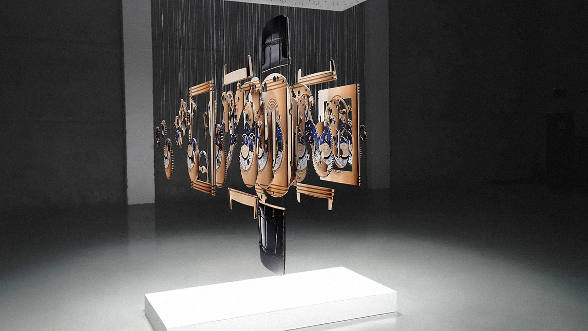

Michael Murphy es un artista norteamericano contemporáneo, reconocido por sus obras perceptuales que revolucionaron el paradigma del arte, uniendo la tecnología y el arte de maneras nunca antes vistas. Su fama se inició con los retratos de Obama en los años 2000, donde se las ingenió para proyectar en pedazos de papel suspendidos. Ahora la tecnología le brindó nuevas herramientas para expandirse aún más.
Su primera inspiración fueron las imágenes dentro de los árboles o las nubes. Cuando era niño jugaba a encontrar estas ilusiones planas en objetos tridimensionales y trataba de entender su ciencia. Rápidamente empezó a experimentar por sí mismo y a crear sus propias imágenes e ilusiones. A través del uso de técnicas multimediales, logra crear experiencias tridimensionales e inmersivas que son verdaderamente alucinantes.
Una de sus últimas obras fue realizada en Londres, en colaboración con Samsung. Murphy utilizó el último modelo de televisores 8k de la marca para dejar volar su creatividad y crear una experiencia inmersiva sin ni siquiera estar personalmente en Londres.
El trabajo de Michael Murphy no conoce límites, y nos abre la imaginación un poquito más con cada muestra. El arte se sigue actualizando, crece junto a nosotros, y nos propone nuevas creatividades para explotar y seguir creando.
Podés seguir la obra de este increíble artista más de cerca en su cuenta de Instagram @perceptual_art